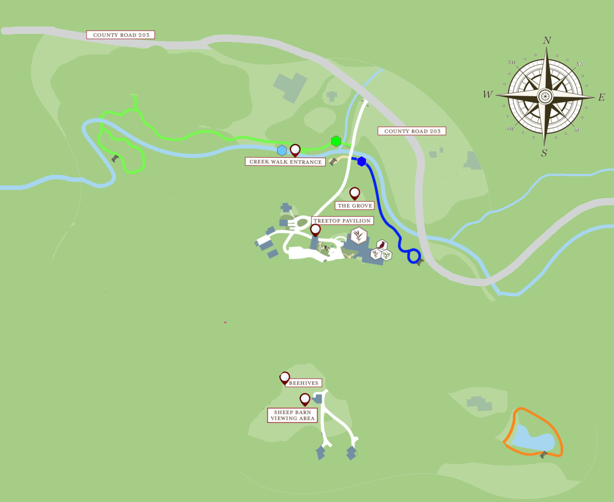

Lecture Notes 26: Intro to Recursion
Functions calling functions
Remember that a function can call another function:
1
2
3
4
5
6
7
8
9
10
11
12
13
14
15
16
17
18 | def split_and_check(n):
if n == 2:
print ("TWO!")
return n-1
n1 = split(n)
return n1
def split(x):
if x > 2:
print(x)
out = x//2
return out
return -1
def main():
num = 200
while num >= 2:
num = split_and_check(num)
|
[2 minutes]:
WHat does this program do?
Self- reference sometimes makes sense
Some problems have solutions that involve splitting the problem into parts, where the
process to reach a solution for each part is the same as for the original problem!
Example:
Binary Search!
So, if we
could state the solution for the arge problem in terms of a solution for the smaller ones!.
How would that look?
Let's see a problem for which the solution follows this pattern,
and a
visual solution for it! (we'll develop the python solution next class)
A Real-Life example
Let's say you are lost in the woods but you have a compass.

You only know 2 things:
- where north is
- you were hiking somewhere south of the river
What can you do?
How Recursion Works
In the algorithm shown above, the steps were:
- Base Case (i.e., when to stop)
- Work toward Base Case
- Recursive Call (i.e., call ourselves)
One more Whiteboeard example
Let's try to phrase the recursive solution to a problem:
The problem is: What is a recursive solution to summing up a list of numbers?
Three Code Examples
Open the Replit called Recursion-01
We will look at the iterative verision of a piece of code, and compare it with the recursive version.
Note: Every recursive program has an iterative version.
Sometimes, writing the iterative version is harder or more unnatural than the recursive one.
What to do next?
- Make sure Pablo has your Final Project Skeleton
- Work on Assignment 07
Reminder: Final Project!
Final Project Speciffication
Teams of 2 or 3If you want to self select, tell me by next classAny others will be assigned randomly- YOU design the project (with notes from me)
- Should inclde enough complexity (think Classes and Objects, Loops, User interaction, Graphics, etc)
- Can be a Practical tool, a Game, an Artistic program, etc.
- There will be 3 deadlines:
Project Proposal: By Wednesday, November 3rd.- Project Skeleton: Show me the design (sketch + comments + basic class/function skeletons); Due Wednesday, November 17th
- Project Prototype: Show me a working prototype with basic functionality. Due Friday, November 26th.
- Working Project Submission: Full project due on Monday, Wednesday 8th.
- Project Presentation / Video (Show us your project in class): Friday, December 10th.
- Final Project Submission: Full project due on Wednesday, Friday 17th.
Before next class (Monday 11/15)
[Due for everyone]
Study Recursion-01 before Monday class.
Assignment 07 (Replit); due Wed 11/17 before 11:59 PM
[Optional]